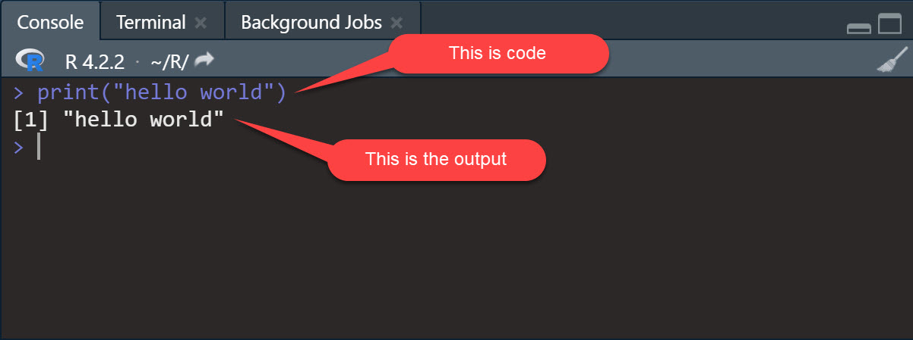

# This statement creates a vector of names
names <- c("Billy","Qi","Claire")
# This statement does exactly the same thing
names <- c("Billy",
"Qi",
"Claire")
# This statement is imcomplete, it's missing the last paranthesis
names <- c("Billy",
"Qi",
"Claire"2 Getting started with R
2.1 Learning objectives
- Installing R and Rstudio
- Navigating the Rstudio interface
- Installing packages
- Writing basic commands
- Understanding R functions
- Understanding R data types
- Understanding R objects
- Understanding conditional statements
- Understanding loops
- Understanding vectorization
2.2 Setting up R
2.2.1 Installing R and Posit
- Visit the Comprehensive R Archive Network (r-project.org) and download the appropriate version of R based on your operating system.
- Run the file that you just downloaded to install R. You can accept all the default installation parameters, or customize your installation if you wish.
- Download the RStudio IDE - RStudio. Again, choose the appropriate version based on your operating system.
- Run the file that you just downloaded to install RStudio. You can accept all the default installation parameters or customize your installation if you wish.
2.2.2 Running R in the cloud
Posit Cloud (formerly RStudio Cloud) is a platform that allows you to create R projects and run RStudio on the cloud using your browser. The name was changed to reflect a shift from a focus on R to a multi-language platform. As of the writing of this book, Posit Cloud allows users to create RStudio projects (free) and Jupyter Notebook (Python) projects (only with paid premium accounts). There are some pros and cons to using Posit Cloud:
Pros
- You don’t have to install anything on your computer.
- The controlled environment can be less prone to bugs.
- All your projects can be found in one place.
- You can easily share projects with other Posit Cloud users.
- You can create shared projects to collaborate with other Posit Cloud users.
Cons
- The free account has low CPU and RAM limits (1 CPU and1GB of RAM) which means that some computationally intensive processes might take much longer time to run than they would on your PC.
- The free account has a limit of 25 project hours per month, so if you run code that takes a very long time to process data, that’s a factor you might want to consider. You should be able to complete the course labs within that 25 project hours limit. Project hours are calculated based on the CPU and RAM allocated using this formula:
(RAM + CPUs allocated) / 2 x hours. This means that with 1 CPU and 1GB of ram, your code can run 25 hours of code in a month. You can decrease the CPU and RAM to 0.5 CPU and 0.5GB to get 50 hours. - You cannot work with files directly on your computer, so you have to upload your data files to your projects and then download any files generated with your code. There is a limit of 20GB by project and a single file cannot exceed 500MB.
2.2.3 Exploring the RStudio environment
Note
The screenshots below are from RStudio Desktop. The interface is practically the same whether you use the desktop version or the cloud version, but there might still be minor variations.
When you open RStudio . You should see three panes as in the image below (note that your background will probably be white. You can select your theme in Tools - Global options - Appearance. The theme I use in these screenshots is “Pastel On Dark”.
2.3 Writing and executing code
You can write code direct in the console gets executed when you press the Enter key.

2.3.1 Write completing statements
What you write in the console is code. However, not all code is an executable and complete statement. Another way to think about this is letters and words or words and sentences: you can write words (code) without writing a full sentence (statement). R wants to execute statements, which is useful to know for at least two reasons:
- When you hit
CTRL+ENTERor click the Run button, R will execute the entire statement, and not just the specific piece of code where your cursor is located. You can write statements on multiple lines to make your code easier to read. - Sometimes, when you write an incomplete statement, you will not get an error but the
+symbol in the console. This is R waiting for you to write code to finish your statement. This often happens because of a missing closing parenthesis.
2.3.2 R Scripts
The console (pane on the left) is where code gets executed and, depending on your code, where the output gets displayed. error messages and warnings are also displayed in the console. Note that code that you write in the console and execute will be saved in the session’s history but erased when close RStudio. To avoid losing your code and having to write it all over again every time you want to do something in R, it is recommended to use R scripts to write your code.
You can create a new script in RStudio by clicking on File, then New File, then R Script.
R scripts are basic text file with a “.R” extension in which you can write code (that R can execute) and comments (that R will not execute and are meant to help you and others understand your code and script. The # character indicates the beginning of a comment.
# The following code tells R to calculate the value of 1 + 1 and return the result.
1+1When writing scripts for projects, it is a good practice to include useful metadata at the beginning (e.g., the project’s name, the script’s purpose, your name, and the date). Here is an example.
# ***********************************************
# Project: Introduction to data science
# Purpose: This is an example of a basic script
# Author: Philippe Mongeon
# Date: 2022-12-29
# ***********************************************
# The following code tells R to calculate the value of 1 + 1 and return the result.
1+1[1] 22.3.2.1 Executing code in a script
When working with a script, you can write all your code and execute it only when you are ready. You can also execute only parts of your code. To execute the code, you can click the Run button at the top of the script pane, or you can use Ctrl + Enter. That will execute the code where your cursor is located and then move the cursor to the next line with code or a comment. If your cursor is in between codes, R will execute the next statement in the script and then move the cursor to the next line with code or a comment. You can also highlight section of your code and run only the selected code. If the code contains multiple statements R will still execute them one after the other, in the order in which they appear.
2.4 Working directory
Your working directory is the default folder from your computer where R will read and save files. The default working directory will typically your R/ folder. You can change the default working directory in Tools - Global options - General. However, a better approach may be to explicitely specify the working directory for your project using the setwd() function.
# ***********************************************
# Project: Introduction to data science
# Purpose: This is an example of a basic script
# Author: Philippe Mongeon
# Date: 2021-12-29
# ***********************************************
# Set working directory
setwd("c:/courses/introduction-to-data-science/")
# The following code tells R to calculate the value of 1 + 1 and return the result.
1+12.5 Projects
Just like Posit Cloud, RStudio allows you to create projects to better organize your files and processes. Creates are associated to a directory in your computer. You can click on the R Project icon in the top right of RStudio screen to create a new project or access existing projects.
If you choose to create a project, you will be asked whether you want to use an existing folder on your computer to store your project files, or create a new one. You can also use version control (e.g. a Git repository) to manage your project, but this is beyond the scope of this book.
If you choose to create a project in a new directory, you will be asked to choose what type of project you are creating. Choose “new project”, unless of course you are creating an R Package, Shiny Application, or Quarto Book (by the way, the book you are reading now is Quarto Book project that was entirely written in R Studio).
Then you will be asked to name your project folder and choose a current folder on your computer where you want this new project folder to be created. If you chose to use an existing folder, you will only be asked to select the folder.
You can see which project you are working on in the top right of the screen. You default working directory is the project folder, so you don’t have to specify your working directory with the setwd() function every time you switch to a new project.
2.6 Functions
R functions are called like this: name_of_the_function(some argument, some argument, some other argument, some other argument, …). The arguments are placeholders for which you provide values when calling the functions. Some functions contain many arguments, and some functions contain none. Typically some functions will have default values for most of the arguments but require that you provide values for the other arguments that don’t have default values. In the code chunk above, setwd(path) is the function, and "c:/courses/introduction-to-data-science/" is the value passed to the argument path.
Arguments have a specific order, so you don’t have to enter the argument’s name if you know that order. It is common practice to not write the argument name for functions with a single argument and to not write the name of the first argument in multi-argument functions. Then example below is a script that uses the read_delim function
# This prints the string "hello world"
print(x="hello world")[1] "hello world"# This also prints the string "hello world"
print("hello world")[1] "hello world"The print function is the default option that is called if your code does not include a function. So you can print values, the result of operations, or the content of an object without explicitly calling the print() function.
# This prints the string "hello world"
"hello world"
# This prints the result of the operation 1+3
1+3
# This prints the content of the object called "data"
data
R is case sensitive
It is important to know that everything in R is case sensitive to avoid unnecessary and frustrating errors. So, the function print() is not the same as the function Print().
So if you get an error message telling you that the function or object you are trying to access does not exist or was not found, make sure you used the correct case in your code.
2.6.1 Documentation
If you need to consult the documentation of a function to learn how to use it, there is usually excellent documentation with examples online which you can easily find by searching the name of the function or package. You can also access the official documentation directly in RStudio. Here is how:
# This opens the documentation for the function setwd() in the Help panel.
?setwd()
# This does the same thing.
help(setwd)2.6.2 Writing your own functions
You can write your own functions and then use them in your code. Here’s and example of a simple, not so useful, function that returns a the square of a number.
# square is the name of the function.
# x is the argument (information that the user of the function will need to provide.)
# the code between the curly brakets is what the function will do when called.
square <- function(x) {
x^2
}Then we can call the function and see what happens
# calculate the square of 5
square(5)[1] 25You can provide default values for the arguments in your functions. Let’s try that with a new function where the use provides both the number and the exponent, with no default value for the number (x) and 1 as the default exponent (exp).
exponent <- function(x, exp = 1) {
x^exp
}
# Then we can all he function.
exponent(3,3)[1] 27By the way, when you create a function it appears under your environment tab in RStudio.
That’s it, now you know how to create a function and specify its arguments with their default value is any. There no limit to the number of statements that the body of your function, so you can make them as complex as you want.
2.7 Packages
Packages are groups of functions that you can install and load so that you can use them in your code. Your basic R installation comes with many pre-installed packages and functions automatically loaded when you open RStudio. The preinstalled packages and functions are often called “base R”.
Usually, a package contains a set of functions designed for specific purposes. Functions can use other functions from the same or from other packages, so don’t be surprised if you try to install one package but end up installing more than one. The tidyverse, which we will explore in the next chapter, is one of these “meta-packages” that installs and loads a collection of packages and their functions.
2.7.1 Installing packages
Packages only need to be installed once for all your projects, as they are installed directly on your computer. However, if you are using Posit Cloud, then you will need to install the packages (other than the base R packages) once for each projects. To install a package, you can use the install.packages() function, with the name of the package in single or double quotes. The code below installs the tidyverse package.
install.packages("tidyverse")You can also use the Packages tab in lower right pane of RStudio to see what packages are already installed, install new packages, or update packages.
2.7.2 Loading packages
Packages provide functions for you to use. But first you must load the package using the library() function. I recommend loading all the packages required for your script at the beginning, after you set the working directory. Let’s update our script.
# ***********************************************
# Project: Introduction to data science
# Purpose: This is an example of a basic script
# Author: Philippe Mongeon
# Date: 2022-12-29
# ***********************************************
# Set working directory
setwd("c:/courses/introduction-to-data-science/")
# Load packages
library(tidyverse)Notice that my script does not include an install.packages() statement. That’s because I already have the package installed on my machine (or project, if I were using Posit Cloud).
2.8 Objects
Objects are containers of data with different data types and data structures. You can create as many object as you want and store any data that you want in them. Let’s create two objects containing numbers, and then write a command that multiplies the content of both objects.
# create an object called "a" containing the value 2
a <- 2
# create an object caled "b" containing the value 4
b = 4
# multiplies the value of object a and b and stores the results in object c
c <- a*b
# prints the content of the object c
print(c) [1] 8Excellent. Now you know how to store values in objects and use them in your statements. Let’s now take a deeper look at the different data types and structures that R objects can use.
2.9 Data types
There are four types of data that we will deal with in this course: strings and numbers, logical values, and dates. Let’s look at them one by one.
2.9.1 Character strings
Chatacter strings (or strings) are sequences of any kind of symbols (including space and other non-printed characters like line breaks). They can easily be recognized because they are surrounded by single (') or double (") quotation marks. Let’s create an object called fruit and store the string “banana” inside it.
fruit <- "banana"Note that the following code would have achieved the same result.
fruit <- 'banana'We can check if the object we created contains a string using the class() function, which returns the data type of an object or value. We can also test specifically if the object is a character string with the is.character() function, which returns TRUE or FALSE.
Let’s try the first method.
class(fruit)[1] "character"Now let’s try the second is.character() method.
is.character(fruit)[1] TRUELet’s say we wanted to store the type of plane 747 into a object. This is not the number 747 as in after 746 and before 748. It is a string that represents the concept of the 747 plane. Therefore, we would logically want to store it has a string rather than a number. This can be done easily using quotation marks plane <- "747". However, if the number happens to be already stored in an object as a number, we can convert it into a string using the as.character() function that converts whatever is provided into a character string. Here’s the demo.
plane<-747
class(plane)[1] "numeric"We can see that the number 747 was stored in the plane object. Now let’s convert it into a string.
# This code takes the content of the plane object (currently the number 747), converts it into a character string, and stores the result into an object called plane (it overwrites the the previous plane object).
plane <- as.character(plane)
# Then we can check what data type the plane object now contains.
class(plane)[1] "character"2.9.2 Numbers
As we saw in some of the previous examples, numbers are another common data type in R. In fact, there are three different number data types: numeric, integer, and complex. However, in this course, we will only consider the numeric and integer types. The only difference between the numeric and integer data types is that numeric can store decimals, but integers cannot. By default, R will use the numeric data type for any number. So if we want to use the integer data type to specify it.
# Create an numeric object
my_numeric <- 42
# Create an integer object
my_integer <- as.integer(42)Again, we can check the data type of the plane object with class() or with is.numeric() and is.integer().
class(my_numeric)[1] "numeric"is.numeric(my_numeric)[1] TRUEclass(my_integer)[1] "integer"is.integer(my_integer)[1] TRUE
Practice
Write some code to answer the following questions:
- Are all integers numeric in R?
- Are all numeric integers?
- What happens if you try to convert a number with decimals to an integer?
2.9.2.1 Arithmetic operators
When working with numbers, you can use arithmetic operators:
# Addition
1+1
# Substraction
4-1
# Multiplication
4*2
# Division
8/2
# Exponant
2^4
# Modulo
11 %% 2
Practice
Let’s use the Pythagorean theorem to determine the length of the hypothenuse (c) of a square triangle, knowking that the two other sides (a and b) forming the 90 degree angle have lengths of 4 cm and 7 cm and knowing that a2 + b2 = c2. Use only the six arithmetic operators shown above (hint: the answer is 8.06225774829855).
Here are recommended steps:
- Create an object called a that contains the value 4
- Create an object called b that contains the value 7
- Create an object called c that contains the calculated value of c
- print the value of c.
2.9.3 Logical
Logical values are TRUE or FALSE (which are actually stored as the numbers 0 and 1). We can also use the shortcut T for TRUE and F for FALSE.
# these are different ways to creates an object containing a logical value (TRUE or FALSE).
my_logical_1 = TRUE
my_logical_2 = FALSE
my_logical_3 = T
my_logical_4 = FAgain we can test whether an object or value is logical or not using the class() and is.logical() and we can convert non-logical values or objects to logical values or objects with as.logical().
Practice
- Create an object that contains the number 1, an object that contains the number 0, an object that contains the number 42, and an object that contains the number -1.
- Use the
as.logical()function to convert each of the objects into a logical object and print them. - Create objects that contains the character 1, the string “1”, the string “TRUE”, and the string “banana” converting them into logical objects and printing them.
As you might have realized while practicing. All numbers (negative or positive) other than 0 are equivalent to the logical TRUE, and only the number 0 is equivalent to the logical FALSE. You can also convert numbers or logical values stored as strings into logical values, but not other strings. That is why the conversion of the string “banana” to a logical value returns “NA”.
2.9.4 NA values
in R, NA is the absence of a value, or missing data. Still, it can be stored in an object like any other value, as any data type. Let’s give it a try by creating a few objects that contain NA.
numeric_na <- as.numeric(NA)
integer_na <- as.integer(NA)
logical_na <- as.logical(NA)
string_na <- as.character(NA)Then we can confirm that the objects classes are as planned.
class(numeric_na)[1] "numeric"class(integer_na)[1] "integer"class(logical_na)[1] "logical"class(string_na)[1] "character"We can also test whether a value is NA with the is.na() function.
is.na(numeric_na)[1] TRUEis.na(integer_na)[1] TRUEis.na(logical_na)[1] TRUEis.na(string_na)[1] TRUEAnother important thing to remember about NAs is that whenever they are part of an mathematical operation, the result will be NA. Here’s an example:
1+1+NA[1] NA2.9.5 Dates
Dates are also a frequently used data type. They can be somewhat complex to work with depending on what we are trying to do, but there is a package called lubridate that contains a lot of functions to make working with dates easier. Although they are rendered as character strings, dates are stored in the memory as numbers. This is why it’s possible to add one day to a date by adding 1 to it, or one week by adding 7, for example.
It is beyond the scope of this chapter to provide a thorough guide on how to work with dates, but let us explore the dates data type a little by first loading the lubridate package and using it’s today() function to store today’s date into an object that we will call today.
# Load the lubridate package to access its functions
library(lubridate)
# Get today's date
today <- today()
# Print today's date
print(today)[1] "2023-03-11"You can use several function to extract parts of dates.
# Here we create several objects that contain different parts of the date
week_day <- weekdays(today)
week <- week(today)
day <- day(today)
month <- month(today)
year <- year(today)
# And now we print them.
print(week_day)[1] "Saturday"print(week)[1] 10print(day)[1] 11print(month)[1] 3print(year)[1] 2023Just like other data types, we can use class() and is.Date() to test whether an object or value is a date.
class(today)[1] "Date"is.Date(today)[1] TRUE2.10 Data structures
All the objects created in the last example are storing a single value. But objects can also contain multiple values organized in different kind of structures. Let’s go through those structures.
2.10.1 Vectors
Vectors are the most basic structure in R and are simply sequences of values of the same type. You can create a vector with the function c().
# This creates a character vector
my_character_vector <- c("Lucy","Matthew","Ricardo","Adrian","Mathilda", "Beyoncé")
# This creates a numeric vector
my_numeric_vector <- c(1,42,25,4)
# This creates a integer vector
my_integer_vector <- as.integer(c(1,42,25,4))
# This creates a logical vector
my_logical_vector <- c(TRUE,T,FALSE,F)
# This prints the character vector
my_character_vector[1] "Lucy" "Matthew" "Ricardo" "Adrian" "Mathilda" "Beyoncé" 2.10.2 Matrices
A matrix is a bi-dimensional representation of a vector. You can create a matrix with the matrix() function and specify the number of rows and columns for your matrix as in the example below.
#this creates a character vector
my_character_vector <- c("Lucy","Matthew","Ricardo","Adrian","Mathilda", "Beyoncé")
#this converts the character vector into a matrix with 2 rows and 3 columns.
my_matrix <- matrix(my_character_vector, nrow = 2, ncol=3)
#this prints the matrix
my_matrix [,1] [,2] [,3]
[1,] "Lucy" "Ricardo" "Mathilda"
[2,] "Matthew" "Adrian" "Beyoncé" 2.10.3 Factors
Factors are another special type of vectors. Think of them as categorical variables that can have a distinct number of possible values (called levels). Say we have a vector of values representing the transmission type of cars. The two levels would be “automatic” and “manual”.
# This creates a factor object
transmission <- as.factor(c('manual',"manual","automatic","automatic","automatic","manual"))
# This prints the factor object
transmission[1] manual manual automatic automatic automatic manual
Levels: automatic manualFactors are also memory efficient because the values are stored as number. As you can see in this screenshot of my R objects, the values are recorded as 2, 2, 1, 1, 1, 2.
2.10.4 Lists
Unlike vectors that are combinations of values of the same type, lists are combinations of objects of any type (including vectors, matrices, data frames, factors or other lists). In the example, below, we create a list that contains some of the objects we created so far.
# This creates a list
my_list <- list(my_character_vector,my_numeric_vector,my_integer_vector,my_logical_vector,today, transmission)
# This prints the list
my_list[[1]]
[1] "Lucy" "Matthew" "Ricardo" "Adrian" "Mathilda" "Beyoncé"
[[2]]
[1] 1 42 25 4
[[3]]
[1] 1 42 25 4
[[4]]
[1] TRUE TRUE FALSE FALSE
[[5]]
[1] "2023-03-11"
[[6]]
[1] manual manual automatic automatic automatic manual
Levels: automatic manual2.10.5 Data frames and tibbles
Data frames (and tibbles, which are essentially data frames with improved features) are tabular structures (think of an Excel spreadsheet) that organize data in rows and columns. The columns of a data frame are essentially vectors. A single column must store data (or object) of the same type, but different columns can have different data types. In the code below, we create a data frame that will contain three vectors with different data types.
# A vector of first names
first_name <- c("Rob","June","Lise")
# A vector of last names
last_name <- c("Murphy","Jones","MacFly")
# A vector of ages
age <- c(42,30,34)
# A data frame that combined the three vectors
my_data_frame<- data.frame(first_name, last_name, age)
# This prints the data frame
my_data_frame first_name last_name age
1 Rob Murphy 42
2 June Jones 30
3 Lise MacFly 34As mentioned above, tibbles are essentially the same as data frame, but with of improvements) one of the main improvement is how the date gets displayed when printed in the console. Let’s convert the data frame we just created into a tibble and print it to see what happens.
# Load the tibble library
library(tibble)
# Create a tibble
my_tibble <- as_tibble(my_data_frame)2.11 Subsetting data
You can one or multiple elements from an R object by providing its coordinates in brackets [row number, column number] . When the rows or columns have names, the elements can be called by name with the dollar sign ($) Here’s an example.
# Let's create a tibble called t
t <- tibble(first_name = as.character(c("Rob","June","Lise")),
last_name = as.character(c("Murphy","Jones","MacFly")),
age = as.integer(c(42,30,34)))
# Select the first column
t[,1]# A tibble: 3 × 1
first_name
<chr>
1 Rob
2 June
3 Lise # Select the first row
t[1,]# A tibble: 1 × 3
first_name last_name age
<chr> <chr> <int>
1 Rob Murphy 42# Select the element in the second row and the second column
t[2,2]# A tibble: 1 × 1
last_name
<chr>
1 Jones # Select the first and second rows
t[1:2,1]# A tibble: 2 × 1
first_name
<chr>
1 Rob
2 June # Select the first and third rows
t[c(1,3),]# A tibble: 2 × 3
first_name last_name age
<chr> <chr> <int>
1 Rob Murphy 42
2 Lise MacFly 34# Select the first name column
t$first_name[1] "Rob" "June" "Lise"# Select the first name of the second observation
t$first_name[2][1] "June"# Select the first name of the second observation (the other way around)
t[2,]$first_name[1] "June"Subsetting from lists is a little different. Let’s take a look.
# Let's create a list called l.
l <- list(1,"Banana",c("a","b","c"),"Wayne Gretzky", list(c('x',"y","z")))
print(l)[[1]]
[1] 1
[[2]]
[1] "Banana"
[[3]]
[1] "a" "b" "c"
[[4]]
[1] "Wayne Gretzky"
[[5]]
[[5]][[1]]
[1] "x" "y" "z"We can see coordinates of the list’s elements are in double brackets, and then the coordinates of the object within the list are in single brackets. Let’s subset some of the elements to see how it works.
# select the third element of the list
l[[3]][1] "a" "b" "c"# select the second element of the third element of the list
l[[3]][2][1] "b"# select the second element of the first element in the fift element of the list
l[[5]][[1]][2][1] "y"2.12 Logical and boolean operators
Logical statements compare two values and return 0 (FALSE) or 1 (TRUE).
| Operator | Meaning |
|---|---|
| < | less than |
| <= | less than or equal to |
| > | greater than |
| >= | greater than or equal to |
| == | equal to |
| != | not equal to |
| %in% | is contained in a vector |
Let’s give them a try
"apples" == "oranges"[1] FALSE1 > 2[1] FALSE"Albert" > "Justin"[1] FALSE6 != 3[1] TRUE# This creates a vector of fruits
fruits <- c("apples","organges","bananas")
# This checks if the fruits vector contains "bananas"
"bananas" %in% fruits [1] TRUEYou can also combine conditions with the Boolean operators AND (&&), OR (\|\|), and NOT (!). Here are some examples:
TRUE || FALSE[1] TRUETRUE && FALSE[1] FALSE!TRUE[1] FALSE!FALSE[1] TRUETRUE && !FALSE[1] TRUE2.13 Conditional statements
Conditional statements allow you to tell R what to do if a condition is met. The syntax is if (condition to test) {code to execute}an if statement. The syntax is if (condition to test) {code to execute}. You can also tell R what to do if the condition is not met with else. The syntax is: if (condition) {code to execute} else {code to execute}.
I recommend breaking the code over multiple lines, like in the code below. Note that the else must be on the same line as the closing curly bracket from the previous section of the statement.
if (1+1==3) {
print("1 + 1 = equals 3")
} else {
print ("1 + 1 does not equal 3")
}[1] "1 + 1 does not equal 3"You can chain more conditional statements with else if, like this:
donuts_jim <- 6
donuts_lucy <- 3
if (donuts_jim < donuts_lucy) {
print("Jim had fewer donuts than Lucy")
} else if (donuts_jim > donuts_lucy) {
print("Jim had more donuts than Lucy")
} else {
print("Jim had as many donuts as Lucy")
}[1] "Jim had more donuts than Lucy"2.14 Loops
Loops are generally used to run the same statement multiple times. Instead of repeating the same code over and over, you write a loop that ends when a certain condition is met. There are different kinds of loop statements (for, while, repeat) and while they work a little bit differently you can do the same thing with all of them.
2.14.1 For loops
The for loop goes through an entire vector, one element at a time. In the example, we have a vector of fruits, and we write a for loop that takes every fruit in the vector one by one, and print the string “I love [fruit]”.
fruits<-c("apples","bananas","pears")
for (i in fruits) {
print(paste("I love",i))
}[1] "I love apples"
[1] "I love bananas"
[1] "I love pears"Note: the letters i, j, and k tend to be used by convention for the cursor in a for loop, but you can use any name you want.
2.14.2 While loops
While loops do not specify a vector of values to iterate through but will execute until a specified condition is met. The code below initiates the value of n at 0, then loops through a code that asks the user to enter a number. It keeps looping until the number 7 is entered.
n <- 0
while (n != 7) {
n <- readline(prompt="Please, choose a number betweet 1 and 10:")
if (n==7) {
print("Lucky seven!")
} else {
print("Wrong number")
}
}2.14.3 Repeat loops
With repeat loops, you don’t specify the condition for the end of the loop, so you have to use the break function inside the loop to exit it. The code below does exactly the same thing as the previous example, but uses the repeat loop instead.
repeat {
n <- readline(prompt="Please, choose a number betweet 1 and 10:")
if (n==7) {
print("Lucky seven!")
break
} else {
print("Wrong number")
}
}
Beware of the dreaded infinite loop
If your code is written in such a way that the condition is never met, you will end up with an infinite loop and the process will just keep running until you stop it manually or your computer explodes. (Don’t worry, your computer is not actually going to explode, no matter how terrible your code might be).
2.15 Vectorization
Almost every object in R is actually a vector or a collection of vectors, and R makes coding and computing more efficient by performing the computation for all elements of the objects. This makes loop (especially the for loop) less useful when the same simple operation needs to be performed for an entire vector. Here’s how we can print “I love apples”, “I love bananas”, and “I love pears” with a leaner and quicker than in the for loop example above.
fruits <- c("apples","bananas","pears")
print(paste("I love",fruits))[1] "I love apples" "I love bananas" "I love pears" You can also use conditional statements with vectors with the ifelse() function.
vector <- c(1:5)
ifelse(vector==3, # condition to verify
"this is 3!", # what do to if the condition is met
"this is not 3!") # what to do otherwise[1] "this is not 3!" "this is not 3!" "this is 3!" "this is not 3!"
[5] "this is not 3!"